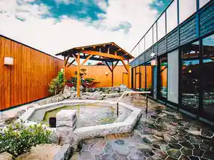
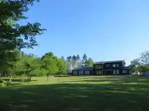
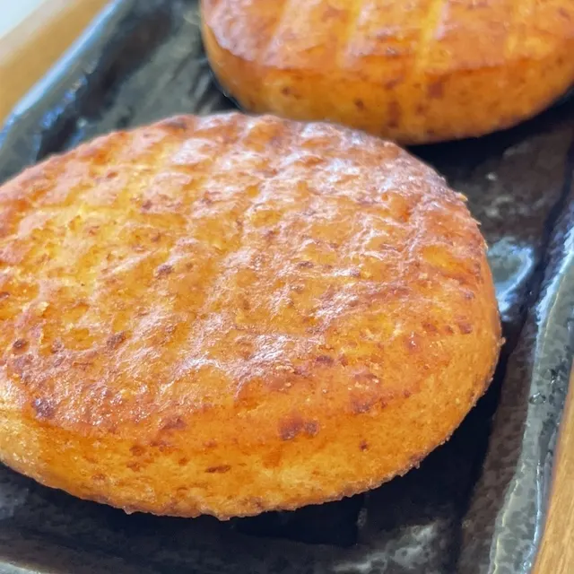
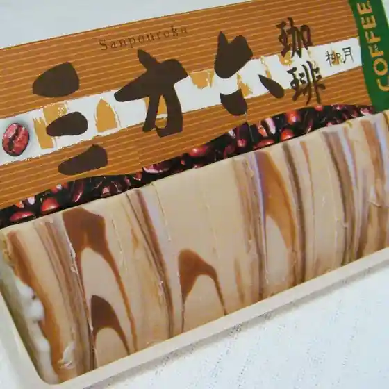
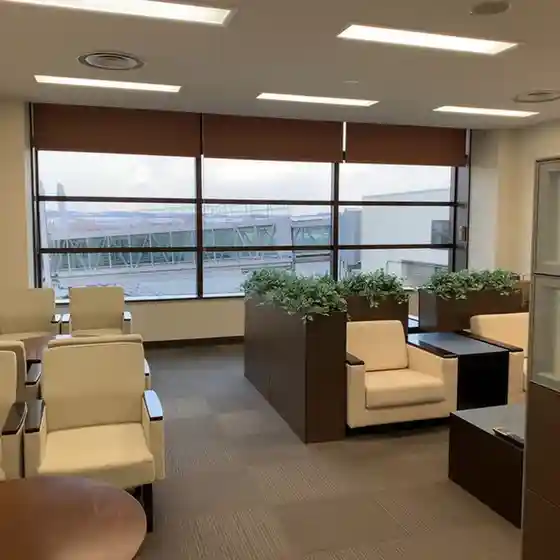
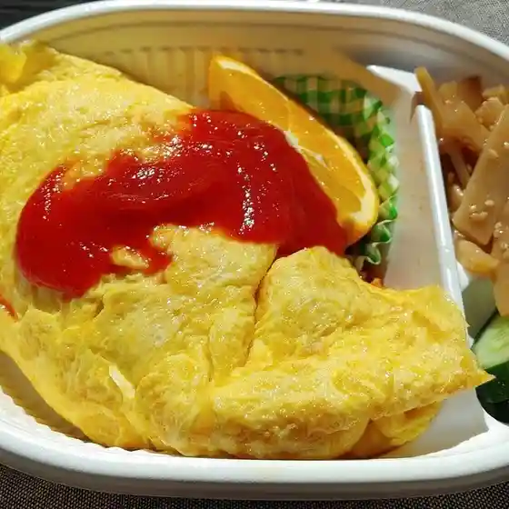
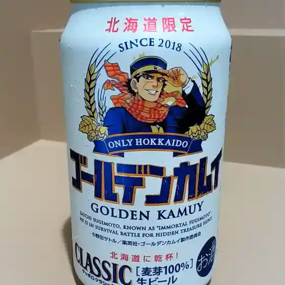
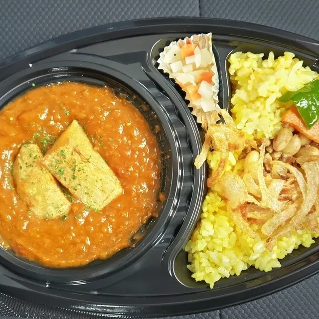
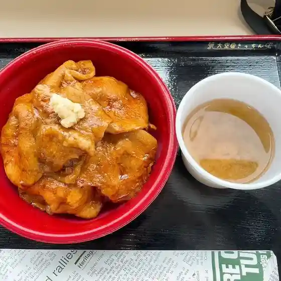

Ozora
Ozora · Hokkaido
Ozora
Highlighted on the Hokkaido map.
Stay
湯元ホテル山水 美肌の湯

Yumoto Hoteru Sansui Bihada No Yu
ノーザンロッジカント

Noozanrojjikanto
ホテルひがしもこと
Hoteru Higashimokoto
Dining
みるきぃふぁーむ

Mirukiifaamu
村一番 女満別空港店

Mura Ichiban Memanbetsu Kuukou Mise
有料待合室

Yuuryou Machiaishitsu
おうちごはん 椛椛

Ouchigohan Kaba Kaba
石田屋 女満別空港店

Ishida Ya Memanbetsu Kuukou Mise
ケラケラ

Kerakera
大空＠きっちん

Oozora @ Kitchin
明るい農村 呑希ー

Akarui Nouson Don Maree
アンテナショップ ほのか 空港店
Antenashoppu Honoka Kuukou Mise
豚珍亭
Buta Chin Tei
隠れ家カフェ 晴耕雨読
Kakure Ie Kafe Seikouudoku
シティマート めまんべつ店
Shiteimaato Memanbetsu Mise
ひまわり温泉
Himawari Onsen
cafe そら
Cafe Sora
ひがしもこと芝桜公園売店
Higashimokoto Shibazakura Kouen Baiten
北都 空港店
Hokuto Kuukou Mise
ひがしもこと乳酪館
Higashimokoto Nyuuraku Kan
ブランジェ・アンジュ
Buranjie Anju
珈琲焙煎工房 たいむ
Koohii Baisen Koubou Taimu
ごはん処 倫
Gohan Tokoro Rin
TABINEKO CAFE
Tabineko Cafe
oka oka
Oka Oka
喫茶 サントサウレ
Kissa Santosaure
レストラン くるりんく
Resutoran Kururinku